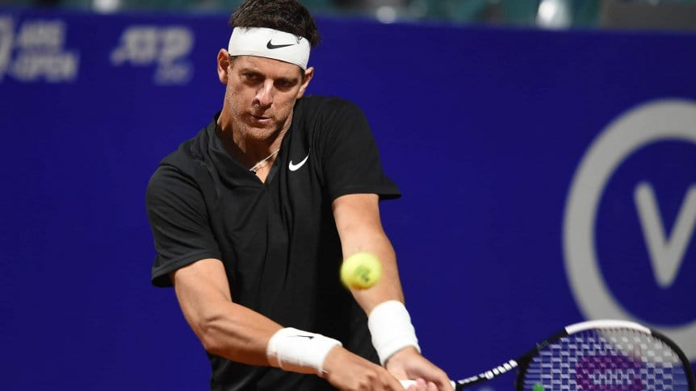

La Torre de Tandil participó de una exhibición en China, en la categoría de dobles junto al español Carlos Moya, quien supo ser número uno del ranking en 1999. El equipo de Delpo ganó por 7-6 (5), 1-6 y 11-9 al del ruso Marat Safin y David Ferrer, después de una hora y trece minutos de juego. Se trató del Torneo Internacional de Maestros de Tenis de Hangzhou en donde el tandilense se mostró muy feliz y emocionado por su vuelta. “Este un momento muy especial. Volver a entrar en una cancha y ante tanto público en las tribunas es algo que me llena de alegría”, declaró después del partido. El deseo del argentino es llegar al Grand Slam estadounidense que se desarrollará en Nueva York desde el 28 de agosto hasta el 10 de septiembre y aunque aún parece lejana la posibilidad de participar, Del Potro ya tiene su invitación especial y sigue con su preparación para intentar llegar.
